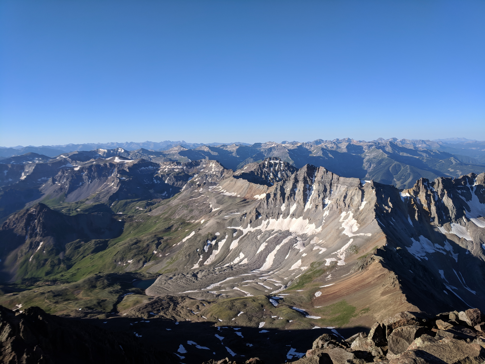
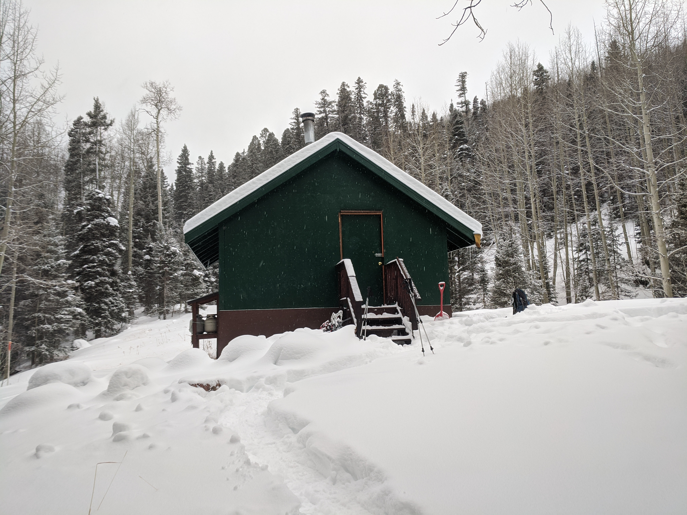
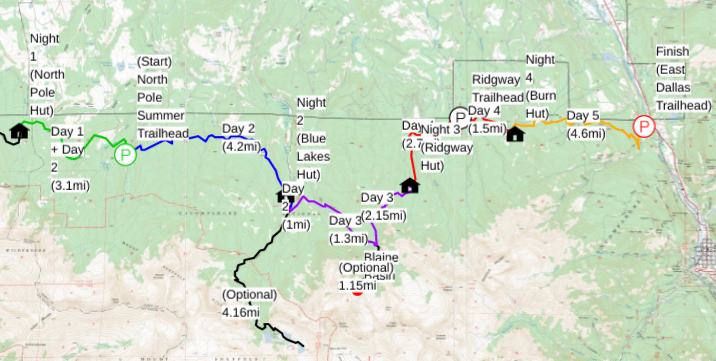

Updated as of 02/03/2021
Overview
Instead of taking a traditional honeymoon (thanks Covid-19 😜), we’d like to celebrate our marriage
by going on a hut-to-hut backpacking trip with some of our closest friends. Backpacking and staying
at backcountry huts is something we really enjoy and we’d like to share that joy with you all. We
also feel this is a nice way to spend more time with people given everyone is traveling relatively
far for the wedding and we want to make that travel well worth it.
Trip Details
We will be spending 5 days (4 nights) on the trail and each night we will stay in a different hut run by
San Juan Huts. The trip will cover
approximately 24 miles over the course of 5 days through the
Mount Sneffels Wilderness,
almost entirely along the
Dallas Trail.
This is considered the “Sneffels Traverse” on the San Juan Huts’ site if you want to look for more information.

Taken from the summit of Mt. Sneffels
Huts
Each hut features 8 bunked beds, a wood stove, a two burner propane stove, sink, and cooking/eating utensils. Specific amenities
for the huts can be found
here. Each hut can accommodate 8 people and we
will be booking out the entire hut such that we are the only party staying at the hut. We’ve stayed at multiple different huts
before and have really enjoyed all of them; they are super nice and usually have great views! However, keep in mind that these are
backcountry huts so while they are really nice they don’t have running water, only have a pit toilet, and we will be making all of
our own food.
We will be carrying all of our own food and making all of our food at the huts. We will be putting together a food list ahead of time
and then work together as a group to divy up the food responsibilities. Part of the fun on these trips is seeing what different people
bring and making food together in a small space with limited tools.

These pictures are from trips in November, so there shouldn’t be snow (or at least not nearly this much).
Costs
The cost per person for the entire trip will be $140. This covers staying at the huts all 4 nights and the shuttle ride at the beginning
of the trip. This cost does not cover food, which we will be splitting and figuring out closer to the trip. All of the huts have already
been booked so payments will be made to Ben at a later date. If you’d like to come on the trip but the cost is an issue, please
let us know and we can work something out
Itinerary
The full trip route can be found
here.
Please
let us know if you have any questions.

Full route from CalTopo
- Day 1, Saturday (06/05/21)
- Drive: From lodging to East Dallas Trailhead (Ouray) and park
- Shuttle: Get a ride (via shuttle from San Juan Huts) from East Dallas Trailhead to Box Factory Park (4WD road)
- 45min drive
- Note that masks are required to be worn in the shuttle
- Hike: Box Factory Park to North Pole Hut
- Night: North Pole Hut
- Day 2, Sunday (06/06/21)
- Hike: North Pole Hut to Blue Lakes Hut
- 7.3mi (backpacking)
- Note that the first 3.1mi of this is retracing our steps from Day 1
- Night: Blue Lakes Hut
- Day 3, Monday (06/07/21)
- Hike: Blue Lakes Hut to Ridgway Hut
- 5mi (backpacking)
- Optional add-on hike to Blaine Basin makes the total mileage 7.25mi (all backpacking)
- Night: Ridgway Hut
- Day 4, Tuesday (06/08/21)
- Hike: Ridgway Hut to Burn Hut
- Night: Burn Hut
- Day 5, Wednesday (06/09/21)
- Hike: Burn Hut to East Dallas Trail (Ouray)
- Drive: Back to Denver (or wherever else)
What To Bring
While this will be backpacking, the camping portion will be more like glamping.
So you should plan on bringing the following:
- Backpack
- Sleeping Bag
- Water Bottles
- Water Filter (if you have one, Ben has one so we’ll have at least 1)
- Hiking Shoes/Boots
- Warm Hat
- Warm Gloves
- Hiking Socks (multiple pairs)
- Rain Jacket
- Headlamp
- Pack Cover (if you have one, garbage bags can also substitute)
- Hat (for shade)
- Sunglasses
- Sunscreen
- Bug Spray
- Food (exact details TBD)
- Microspikes (if you have them)
- Warm Jacket (i.e. puffy)
- Change of Clothes (probably 2)
- Masks
More Resources
If you’d like more information about the huts, what the elevation profiles are like for the trails, or more information on
the route check out the documents
here.